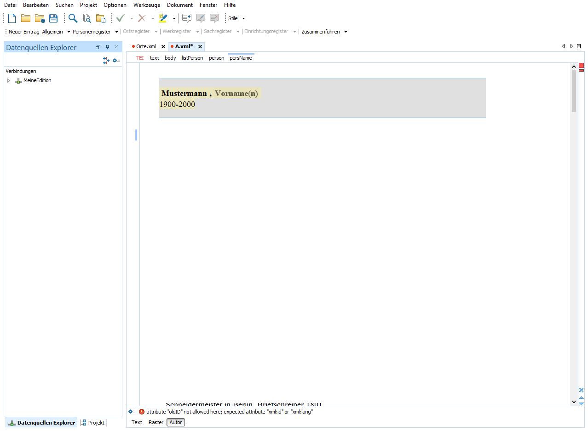

Registerfunktion in den Registern
Um die Registerfunktionen zu testen, verlinken Sie einen Eintrag im Personenregister mit einem Eintrag im Ortsregister.
-
Legen Sie über das Menü testweise einen Eintrag (z.B. Mustermann) an.

Speichern Sie anschließend die Datei.

-
Wählen Sie im Fenster Registereintrag auswählen ihren
Testeintrag aus dem Personenregister aus und bestätigen Sie mit
Ok.

Sie haben auf einen Eintrag des Personenregisters verlinkt.